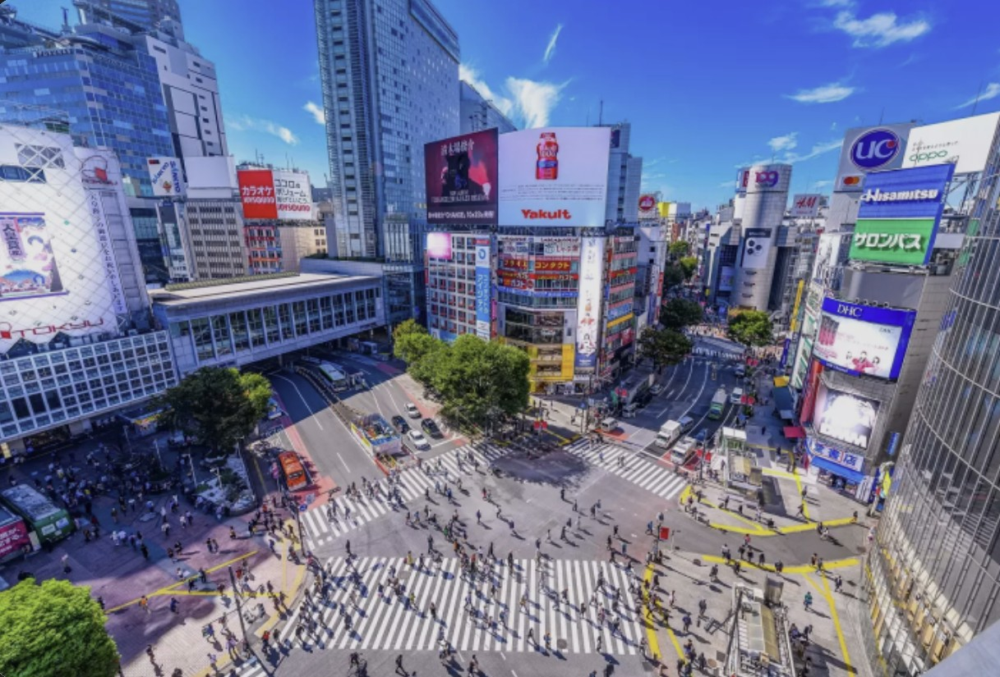
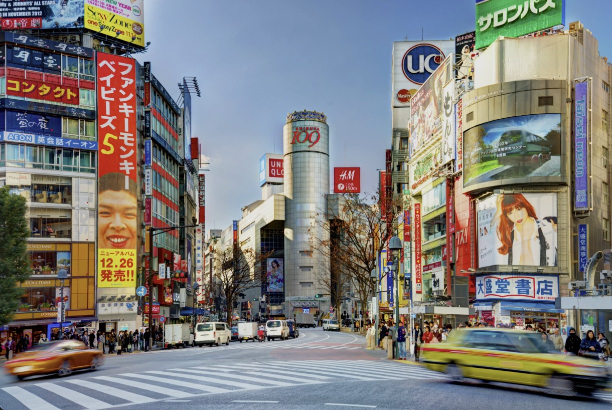
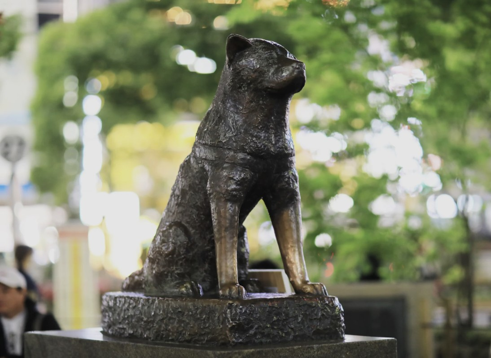

위치 / 접근
도쿄 시부야구 시부야 2-24-12. JR 시부야역 하치코 출구 바로 앞에 위치하며, 도쿄 메트로 긴자선·한조몬선·후쿠토신선 등 여러 노선이 교차하는 교통의 요지다. 하네다공항에서는 케이큐선과 도쿄 메트로를 이용하면 약 45분 소요.
시부야 스크램블 교차로
세계에서 가장 붐비는 교차로 중 하나로, 신호가 바뀌면 약 3천 명의 보행자가 동시에 횡단한다. 인근 카페나 스타벅스 2층에서 내려다보는 장면은 시부야의 상징적인 장면으로, ‘도쿄의 맥박’이라 불릴 만큼 역동적인 풍경을 자랑한다.
하치코 동상
충견 하치코는 주인을 기다리며 매일 시부야역 앞에 나타났던 실화의 주인공으로, 일본 내에서 ‘충성’과 ‘우정’의 상징으로 사랑받는다. 동상은 시부야역 출구 바로 앞 광장에 위치해 있으며, 현지인과 관광객 모두의 인기 포토존이다.
시부야 스카이 (Shibuya Sky)
2019년에 개장한 시부야 스크램블 스퀘어 빌딩의 옥상 전망대. 229m 높이에서 도쿄 타워와 스카이트리, 신주쿠 빌딩 숲까지 한눈에 볼 수 있다. 낮에는 도심의 활기찬 모습, 밤에는 반짝이는 네온사인 야경이 인상적이다.
쇼핑 & 먹거리
시부야109, 파르코, 히카리에, 스크램블 스퀘어 등 트렌드 중심의 쇼핑몰이 밀집해 있다. 또한, 시부야 센터가이 거리에는 카레, 라멘, 스시, 디저트 등 다양한 맛집이 즐비하며, 밤에는 바와 클럽 거리로 변신해 도쿄의 청춘 에너지를 느낄 수 있다.
이용 정보
- 하치코 동상: 24시간 개방 (무료)
- 시부야 스카이 전망대: 10:00~22:30 / 입장료 성인 2,000엔
- 주말 오후 시간대 인파 혼잡 주의
⚠ 여행 팁
- 스크램블 교차로 전경은 ‘시부야 스카이’ 또는 ‘스타벅스 2층’에서 가장 잘 보인다.
- 야간 방문 시 삼각대 촬영 제한이 있으므로 휴대폰 촬영 권장.
- 하치코 앞 광장은 만남의 장소로 혼잡하니 약속 시 다른 출구 추천.
- 밤에는 유흥가 주변 조심, 혼잡 시간대에는 소지품 주의.